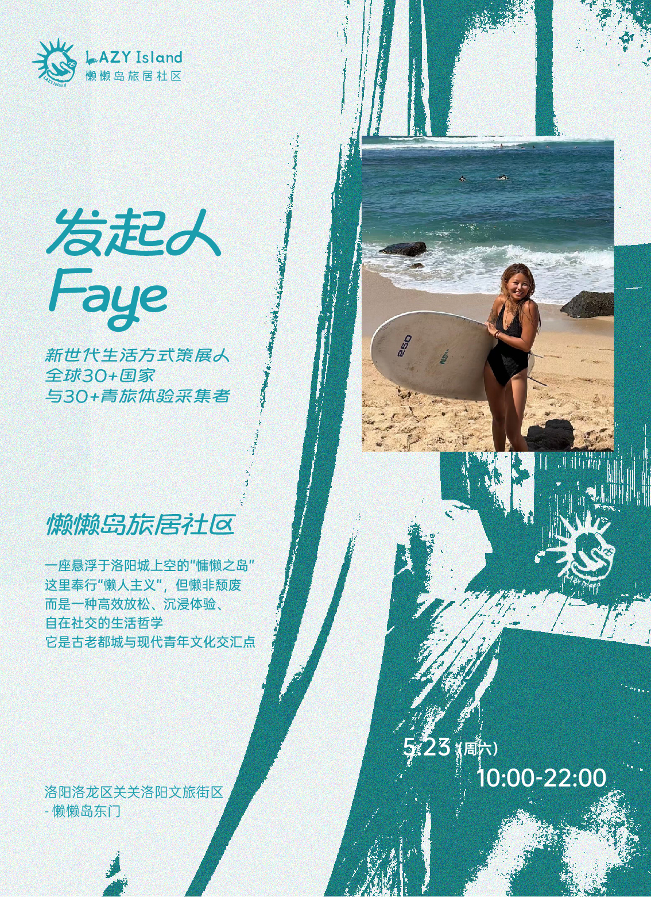

DUODUO
多多的个人工作与生活实验
FIELD NOTE 01 · 田野笔记
把真实世界里的问题，做成可以留下来的作品
A field note from places, people and unfinished experiments.
这里放文章开场。先写一个具体的人、地点、动作或问题，不用空泛的自由宣言。

图注：地点、时间、人物或素材来源。
01 · THE QUESTION
真正的问题是什么？
使用具体正文。每段保持一个清楚判断，并用真实细节支撑。
“重点句放在留白里，而不是左竖线引用框里。”
02 · WHAT CHANGED
现实改变了什么判断？
写过程、失败、调整与留下的资产。不要伪造数字，不把正在测试写成已经成功。